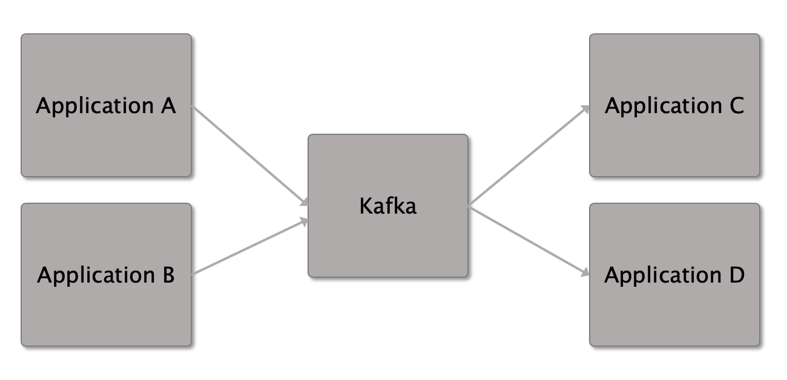
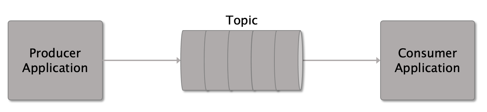

Kafka Overview
Kafka is a messaging system. It provides a communication service between applications. An application can send messages to Kafka, which are then consumed by other applications.
Kafka decouples applications and provides the ability to manage concerns around messaging. This reduces the complexity of the applications, the applications can focus on their core requirement, without the need to manage message transport. Applications focus on processing messages, instead of focusing on managing the messages. Kafka will guarantee the order of messages.

Messages are known as records. Applications that I have worked with have stored these records in a JSON or YAML format. The record will consist of a key, value, and timestamp. Messages are written to topics by the applications. This application is known as the producer. When another application connects to that topic as a consumer, the message are sent to that application for processing. A topic will have zero or more consumers. The order of messages will be maintained, the consumer will receive messages in the order that the producer has enqueued the message (think of a queue data structure).

Kafka provides 4 APIs:
- Producer: provides an application with the ability to write messages to one or more topics.
- Consumer: provides an application with the ability to consume message from one or more topics.
- Streams: provides an application with the ability to consume and then produce messages onto topics, this is a hybrid of the producer and consumer. The application reacts to messages when they are sent to the topic. It allows an application to transform messages from one topic and write those transformed messages onto another topic easily. We use this a lot in our service applications where a message is manipulated or decorated by our service and then that updated message is written straight back out to another topic.
- Connector: connecting to other systems e.g. databases (I’ve never worked with this API).
Advantages of Kafka:
- Makes the application code less complex, letting the application just focus on a single purpose.
- Concerns can then be split out into different services.
- Provides management around high availability of messages, and geographic replication.
- Provides greater ability to scale, allowing multiple services to create and consume messages. We can split the task of processing consumed messages between different service instances which speeds up processing. Similar to concurrency, if the hardware is available to process messages concurrently by services.
- Kafka provides analytics and monitoring to help manage the message processing.
Disadvantages of Kafka:
- Messages have to be sent via the network so may have latency.
- Managing Kafka can be complex.
- Configuring Kafka for the load management can be difficult.
- Separating out applications into single purpose services can lead to more complexity in the given number of services.
- It may be difficult to keep a mental model of the system when there are so many separate repos and services.